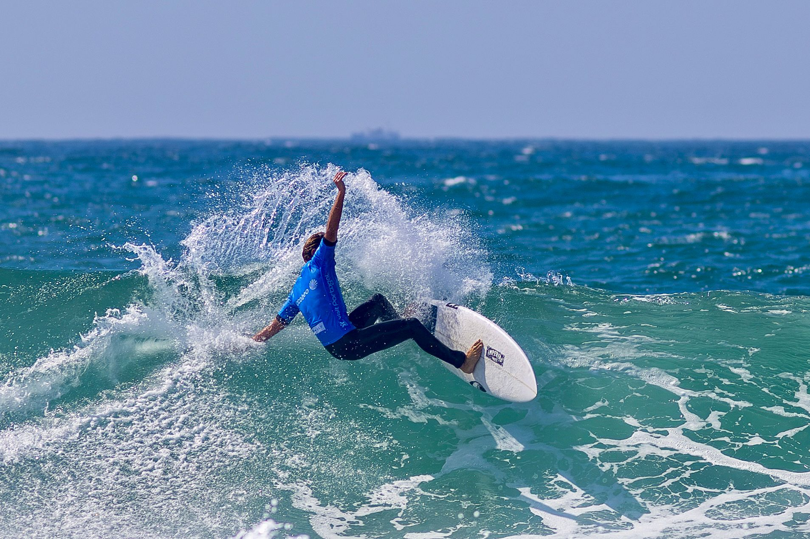
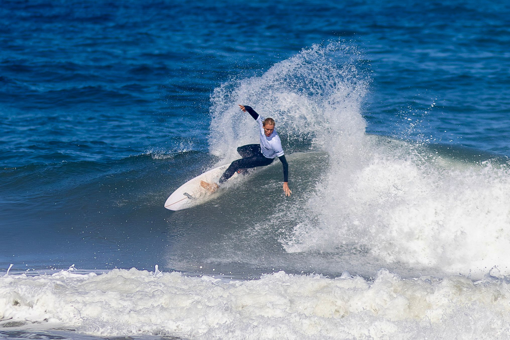
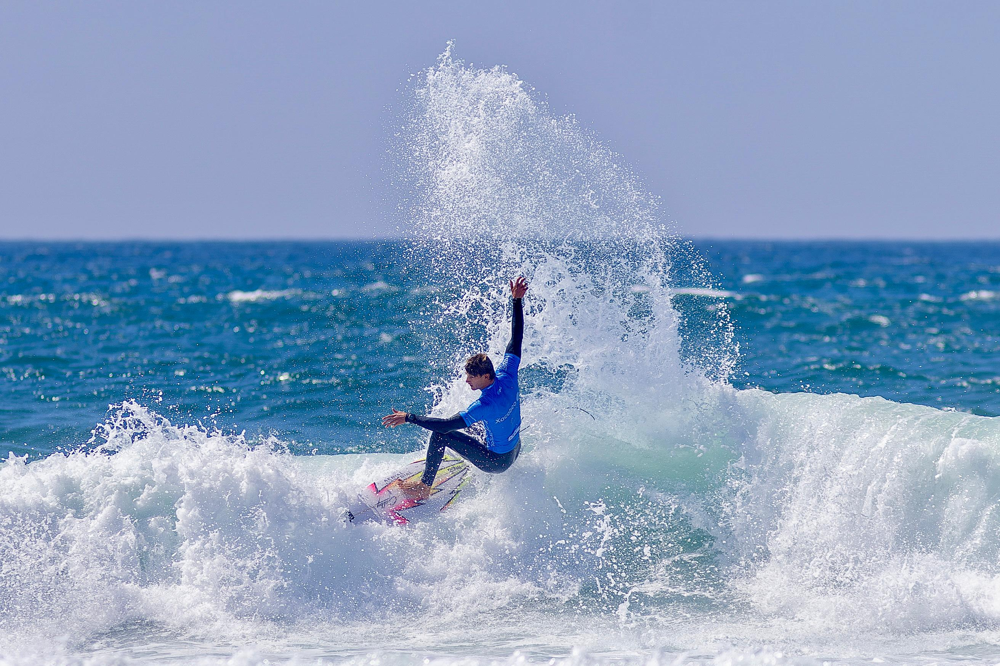

Leça da Palmeira is hosting a World Surf League event for the first time this week, with the Xacobeo Norte Surf Fest bringing a men’s and women’s Qualifying Series 6,000 International to Praia de Leça from 1 to 6 September.
The competition has a 144-surfer men’s draw and an 80-surfer women’s draw. Its 6,000 points can shape both regional QS campaigns and the route towards the Challenger Series, giving the new Matosinhos stop significance beyond its debut status.

Portuguese surfers advance through an interrupted opening
The first day completed the men’s Round of 144, the women’s Round of 80 and most of the men’s Round of 128. Vasco Ribeiro and Martim Nunes were among the Portuguese heat winners, while Frederico Morais and João Mendonça later secured places in the men’s Round of 64.
Fog delayed the second morning and deteriorating surf brought the day to an early finish after the men’s Round of 128 and six heats of the Round of 96. Former Championship Tour surfer Jackson Bunch, Morais and European QS leader Hans Odriozola were among those progressing.

A new international stop for northern Portugal
The event is the second stop in the WSL’s five-event QS 6,000 International schedule for 2026, following Pantin in Galicia. For northern Portugal, its arrival restores top-level WSL qualifying competition after an absence of more than five years and puts an established domestic contest venue into the international calendar.
Competition sits inside the third Norte Surf Fest, whose wider programme includes talks, live music, workshops, adapted surfing and ocean-focused community activity. Those elements frame the week, but the sporting story remains the large international field competing for progression in the WSL pathway.

IM News correspondent in Leça da Palmeira: Sérgio Mendes.
Competition information checked against the World Surf League, the official Norte Surf Fest programme and Visit Portugal.